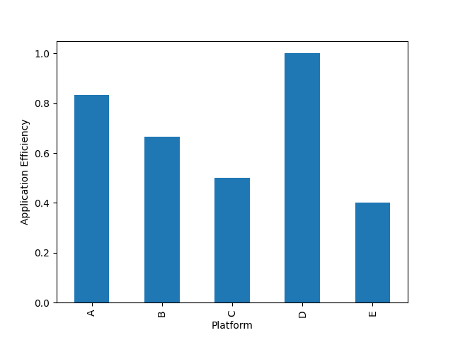

Note
Go to the end to download the full example code.
Working with Application Efficiency¶
Understanding relative performance.
One goal of P3 analysis is to understand how well a given application is able to adapt to and make effective use of the capabilities of different platforms. Comparisons of raw performance (e.g., time to solution) across platforms can’t help us, because raw performance doesn’t reflect how fast an application should run.
To address this, the P3 Analysis Library works with normalized performance efficiency data. With normalized data, an application’s performance can be represented as a number in the range \([0, 1]\), where \(1\) means an application is achieving the best possible performance.
There are multiple ways we can normalize the data to measure relative efficiency, and for this tutorial we will consider application efficiency, defined below:
- Application Efficiency
The performance of an application, measured relative to the best known performance previously demonstrated for solving the same problem on the same platform.
Working with application efficiency is simple because it does not rely on performance models or theoretical hardware limits. Although it can’t tell us whether an application is performing as well as theoretically possible, it shows how an application compares to the state-of-the-art, which is often good enough.
Calculating Application Efficiency¶
Let’s begin with a very simple example, with a single application, using the data below:
problem |
application |
platform |
fom |
date |
|---|---|---|---|---|
Test |
MyApp |
A |
25.0 |
2023 |
Test |
MyApp |
B |
12.5 |
2023 |
Test |
MyApp |
C |
25.0 |
2023 |
Test |
MyApp |
D |
NaN |
2023 |
Test |
MyApp |
E |
5.0 |
2023 |
Tip
A NaN or 0.0 performance result is interpreted by the P3 Analysis Library to mean that an application run was in some way invalid. We can use this to explicitly represent cases where applications did not compile on specific platforms, did not run to completion, or ran but produced numerical results that failed some sort of verification.
After loading this data into a pandas.DataFrame (df), we can
use the p3analysis.metrics.application_efficiency() function to calculate a
table of application efficiencies.
problem platform application fom date app eff
0 Test A MyApp 25.0 2023 1.0
1 Test B MyApp 12.5 2023 1.0
2 Test C MyApp 25.0 2023 1.0
3 Test D MyApp NaN 2023 0.0
4 Test E MyApp 5.0 2023 1.0
These initial results may be a little surprising, because they’re all either 1.0 or 0.0. What happened? Since our dataset contains only one result for MyApp on each platform, each non-zero result is the “best known” result for that platform! The only exception is Platform D, which is assigned an efficiency of 0.0 to reflect that it either did not compile, or did not run successfully.
Tip
Calculating meaningful application efficiency results requires a minimum of two results per platform.
Digging Deeper: Adding More Data¶
Let’s see what happens if we add some more data, from a different application running on the same platforms:
problem |
application |
platform |
fom |
date |
|---|---|---|---|---|
Test |
YourApp |
A |
25.0 |
2023 |
Test |
YourApp |
B |
10.0 |
2023 |
Test |
YourApp |
C |
12.5 |
2023 |
Test |
YourApp |
D |
6.0 |
2023 |
Test |
YourApp |
E |
1.0 |
2023 |
After updating our DataFrame, we can re-run the same function as before to recompute the application efficiencies.
problem platform application fom date app eff
0 Test A MyApp 25.0 2023 1.0
1 Test B MyApp 12.5 2023 0.8
2 Test C MyApp 25.0 2023 0.5
3 Test D MyApp NaN 2023 0.0
4 Test E MyApp 5.0 2023 0.2
5 Test A YourApp 25.0 2023 1.0
6 Test B YourApp 10.0 2023 1.0
7 Test C YourApp 12.5 2023 1.0
8 Test D YourApp 6.0 2023 1.0
9 Test E YourApp 1.0 2023 1.0
YourApp is now the fastest (best known) application on every platform, and so it assigned an application efficiency of 1.0 everywhere. The application efficiency values for MyApp are all between 0.0 and 1.0, reflecting how close it gets to the state-of-the-art performance on each platform.
Important
Adding new data changed the application efficiencies for MyApp and YourApp. Application efficiency values can become stale over time, and accurate P3 analysis requires us to track “best known” results carefully.
Plotting Application Efficiency¶
The P3 Analysis Library does not contain any dedicated functionality for
plotting application efficiency values. However, it is straightforward to use
matplotlib and/or the plotting functionality of pandas to
produce useful visualizations.
For example, plotting a bar chart of application efficiences for one application can help us to summarize that application’s performance more effectively than a table:
filtered = effs[effs["application"]=="MyApp"]
filtered.plot(kind="bar", x="platform", y="app eff", xlabel="Platform", ylabel="Application Efficiency", legend=False)
plt.savefig("application_efficiency_bars_2023.png")
We can now clearly see that MyApp can adapt to and make very effective use of Platforms A and B, is within 2x of state-of-the-art performance on Platform C, but performs poorly on Platforms D and E. The key takeaway from this analysis is that a developer wishing to improve the “performance portability” of MyApp should focus on improving support for Platforms D and E.
Working with Historical Data¶
The performance of an application can change over time, as developers add new features and optimize for new platforms, or due to changes in the software stack (e.g., new compiler or driver versions).
Let’s see how this could affect the application efficiency of MyApp, by adding some new data points collected at a later point in time:
problem |
application |
platform |
fom |
date |
|---|---|---|---|---|
Test |
MyApp |
A |
30.0 |
2024 |
Test |
MyApp |
B |
15.0 |
2024 |
Test |
MyApp |
C |
25.0 |
2024 |
Test |
MyApp |
D |
3.0 |
2024 |
Test |
MyApp |
E |
2.5 |
2024 |
We can compute application efficiency as before:
problem platform application fom date app eff
0 Test A MyApp 25.0 2023 1.000000
1 Test B MyApp 12.5 2023 0.800000
2 Test C MyApp 25.0 2023 0.500000
3 Test D MyApp NaN 2023 0.000000
4 Test E MyApp 5.0 2023 0.200000
5 Test A YourApp 25.0 2023 1.000000
6 Test B YourApp 10.0 2023 1.000000
7 Test C YourApp 12.5 2023 1.000000
8 Test D YourApp 6.0 2023 0.500000
9 Test E YourApp 1.0 2023 1.000000
10 Test A MyApp 30.0 2024 0.833333
11 Test B MyApp 15.0 2024 0.666667
12 Test C MyApp 25.0 2024 0.500000
13 Test D MyApp 3.0 2024 1.000000
14 Test E MyApp 2.5 2024 0.400000
These latest results suggest that the developers of MyApp acted upon earlier results and improved support for Platforms D and E. But in doing so, a small performance regression was introduced in Platforms A and B.
Note
Such trade-offs are very common, especially when developers wish to maintain a single source code that targets multiple platforms. Different platforms may respond differently to the same code changes, owing to architectural differences (e.g., cache size, available parallelism) or differences in the software stack (e.g., compilers performing different optimizations). For some real-life examples, see the papers here and here.
Computing the correct application efficiency values for MyApp and YourApp requires that our dataset contains all of our historical performance results. Since what we’re really interested in understanding is the latest application efficiency, we should take care to filter our data appropriately before producing any plots.
Further Analysis¶
Computing application efficiency is often simply the first step of a more detailed P3 analysis.
The examples below show how we can use the visualization capabilities of the P3 Analysis Library to compare the efficiency of different applications running across the same platform set, or to gain insight into how an application’s efficiency relates to the code it uses on each platform.
Examples¶
Total running time of the script: (0 minutes 0.210 seconds)